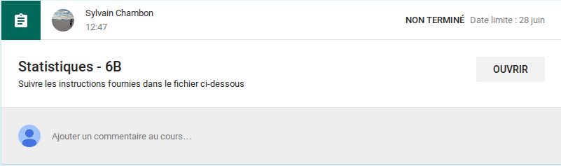
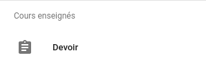
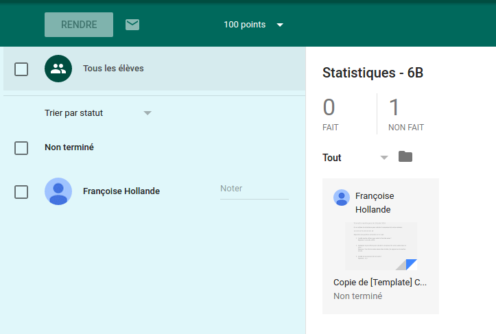
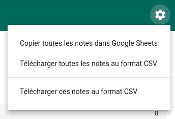

Les Devoirs
Use Case
Je suis professeur de mathématiques. J’ai créé un devoir pour évaluer mes élèves en statistiques.
Comment envoyer ce devoir aux élèves afin qu’ils puissent le faire dans la classe virtuelle ?
Créer un devoir
Je dois commencer par créer un devoir. Pour cela, je clique sur le bouton marqué d’un signe  en bas à droite et je choisis Élaborer un devoir.
en bas à droite et je choisis Élaborer un devoir.
Une fenêtre apparait dans laquelle je vais donner les instructions pour le devoir.
Instructions du devoir
Je commence par donner un titre à mon devoir. Ensuite je rédige les instructions. Généralement, mes instructions sont sur un document séparé. Je vais donc chercher le document sur Google Drive en cliquant sur l’icône  . Je retrouve mon devoir dans la fenêtre qui apparait.
. Je retrouve mon devoir dans la fenêtre qui apparait.
Je décide à présent d’une date de remise du devoir1 (je pourrais aussi régler l’heure).
Ensuite, pour ce devoir, je souhaite que les élèves rédigent directement leurs réponses sur le sujet. Ils doivent donc avoir chacun leur propre copie du document (un peu comme des photocopies qu’on distriburait en classe réelle). Je choisis donc Faire une copie par élève dans le menu déroulant de droite :
Une fois tout cela terminé, je peux publier mon devoir. Je clique sur le bouton Créer un devoir. Mon devoir apparait dans mon flux :
Côté élève
Aussitôt le devoir créé, les élèves reçoivent une notification par email :
Un événement est automatiquement créé dans leur agenda :

Depuis ces deux endroits, mais aussi évidemment depuis le flux associé au cours, les élèves accèdent à leur devoir.

Faire le devoir
Pour pouvoir faire leur devoir, l’élève doit cliquer sur le bouton Ouvrir. (Dans son interface, le professeur voit que l’élève a commencé son devoir.)
On peut voir qu’il peut ouvrir le sujet2 mais aussi ajouter une pièce jointe ou créer un document Google.
Tout le temps de sa rédaction, l’élève peut recevoir des commentaires du professeur sur son devoir (annotation à côté de certains paragraphes) :
Une fois que son devoir sera terminé, il cliquera sur le bouton Rendre le devoir. Lorsque ce bouton est pressé, plus de retour en arrière possible : l’élève ne peut plus modifier son document, seul le professeur le peut.
Gérer les devoirs
Je clique sur le menu Devoir  en haut à gauche de l’interface et je choisis Devoirs.
en haut à gauche de l’interface et je choisis Devoirs.

J’accède ainsi à la liste de tous les devoirs dans tous les cours. Le dernier devoir créé apparait en haut de la liste :
En cliquant sur le titre de ce devoir, j’accède à la liste de tous les élèves. Je sais exactement qui a fait le devoir, qui est en train de le faire et qui ne l’a pas encore regardé.

Suivi des devoirs
Pendant que les élèves font leur travail, je peux accéder à leur copie, voir l’avancement des travaux… Je clique sur le devoir d’un élève qui s’ouvre. Je peux lui mettre des annotations directement sur sa copie par exemple.
Noter les devoirs
Lorsque le devoir est rendu par l’élève, il est temps de le noter ! Je peux décider de la note (par défaut sur 100 points).
Je saisie la note dans le champs à côté du nom de l’élève dans la liste de gauche. Lorsque la note est entrée, le nom de l’élève est sélectionné, prêt à rendre la copie. Si je corrige et note d’autres copies, le nom des élèves se sélectionne au fur et à mesure.
Lorsque je clique sur le bouton Rendre je peux joindre un commentaire particulier (si je rends une seule copie) ou général (si je rends toutes les copies en même temps).
Une fois le devoir rendu, l’élève reçoit une notification par email avec sa note.
L’élève peut à nouveau modifier son devoir pour le corriger par exemple…
Récupérer les notes
En haut à droite de la liste des devoirs, si je clique sur l’engrenage  et je choisis le type de fichier sous lequel je veux récupérer ma liste de notes (Google Sheet ou CSV)
et je choisis le type de fichier sous lequel je veux récupérer ma liste de notes (Google Sheet ou CSV)

NOTES
1. Décider de la date de remise n’implique pas que les élèves ne pourront pas le remettre hors délais. Leur devoir aura juste la mention En retard. ↩
2. Remarquez le nom bizzare du sujet : Copie de [Template] Copie de …. C’est une bizarrerie du système. C’est moche et ce sera sans doute changé dans les prochaines versions de Google Classroom. ↩